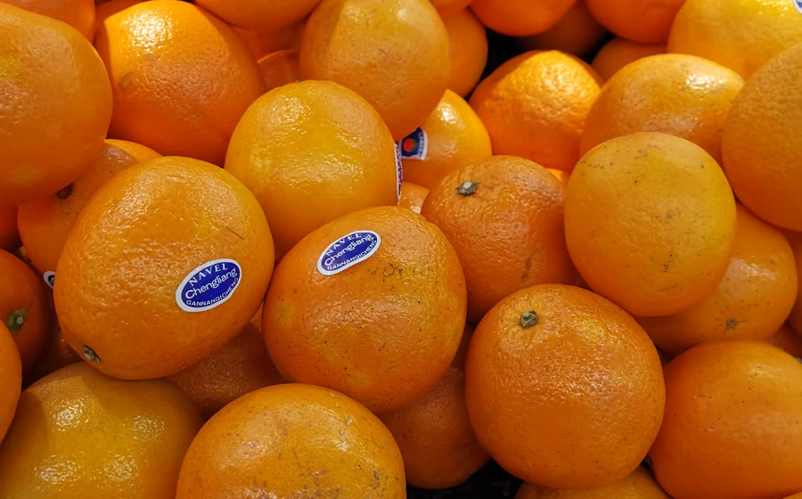
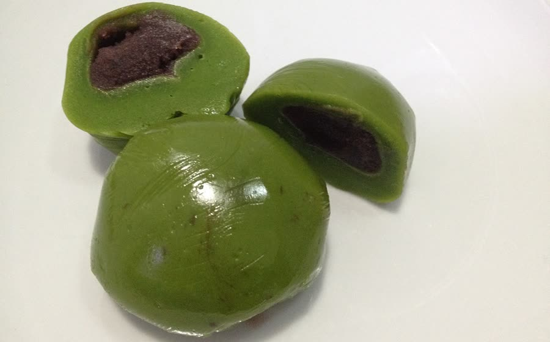

赣南脐橙
赣南最有辨识度的味觉名片。橙皮明亮、果肉清甜多汁；每到成熟季，橙色会成为一种很具体的“家乡颜色”。
赣州不是抽象的“故乡”两个字，它有可以被记住的颜色、味道与季节。下面几样，是我会用来向朋友介绍赣州的入口。

赣南最有辨识度的味觉名片。橙皮明亮、果肉清甜多汁；每到成熟季，橙色会成为一种很具体的“家乡颜色”。
酸香、鲜辣、下饭，是赣南地方菜里很有记忆点的一道。它不像精致摆盘的菜，更像热气腾腾的日常。

把艾草的清香揉进米食里，颜色朴素，味道却很有季节感。对我来说，它更接近“小时候的味道”。
我不想否定做题训练带来的基础。真正想改变的是：面对问题时，不再只问“这道题的标准答案是什么”，而是先问“我可以调用哪些知识、工具和资源，把它解决出来”。
县城中学的学习经历让我熟悉重复训练、耐心积累和靠自己把知识一点点补齐。这些不是应该抛下的东西，而是后来学习新技术时很重要的底座。
接触生成式 AI 后，我发现效率不只来自更快地做同一种题，也来自重新拆解问题、快速查证信息、生成原型、调试代码，再把结果验证一遍。
真正的“善用工具”不是把答案交给 AI，而是知道什么时候该用、怎么问、如何检查、哪里可能错，以及最终为什么接受或拒绝它的结果。
网站、小游戏、AI 音乐、代码实验都在训练同一种能力：把模糊想法变成可以运行、可以展示、可以继续修改的东西。